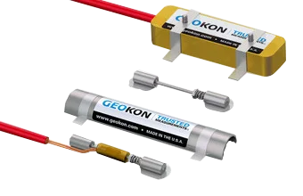
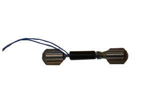

Vibrating Wire Strain Gauges — Precision Stress Measurement
High-accuracy vibrating wire strain gauges designed for long-term stress and deformation monitoring on steel, concrete and rock. Models 4100 and 4150 combine robust stainless-steel construction with exceptional stability for all field conditions.

Spot Weldable Strain Gauge
Model 4150 — for steel surfaces
Spot-Weld Mounting
4100 Series Strain Gauge
For steel, concrete & rock
Epoxy or Weld MountingBoost Structural Insights with High-Accuracy Strain Monitoring
The Model 4100 and 4150 Vibrating Wire Strain Gauges are designed for measuring strains on steel surfaces or structural components where arc welding is restricted or impractical. They utilise a vibrating wire element tensioned between two mounting blocks, converting even minute deformations into reliable frequency-based digital readings.
Built with robust stainless-steel construction, waterproof sealing, and integrated thermistor for temperature-compensated measurements — delivering exceptional long-term stability in all field conditions.
Quick installation on steel surfaces
Integrated thermistor for accuracy
3,000 / 5,000 / 10,000 µε options
GeoNet LoRaWAN & Cellular ready
Key Benefits
Detect early-stage stress, deformation and load variations across steel, concrete and composite structures for timely interventions.
High-accuracy vibrating wire technology delivers stable, temperature-compensated readings across pipelines, bridges, tunnels and rebar systems.
On-device processing filters noise, interprets patterns and transmits real-time data for immediate decision support.
Compatible with Sentra's GeoNet data loggers and digital dashboards for unified strain, vibration and pressure analysis.
What Makes Our Strain Gauges Different
Purpose-built for long-term strain monitoring with proven vibrating wire technology and robust field-ready design.
Vibrating Wire Technology
Proven VW element tensioned between two mounting blocks converts minute deformations into stable, frequency-based digital readings. Exceptional long-term stability for permanent installations.
Multiple Measurement Ranges
Available in 3,000 µε, 5,000 µε, and 10,000 µε ranges to suit different applications — from subtle structural strain to higher-deformation environments.
Rugged Stainless Steel Design
Stainless steel, waterproof construction with integrated thermistor for temperature-compensated measurements. Suitable for long-term field deployment in harsh environments.
Flexible Mounting Options
Spot-weldable or epoxy-mountable design for steel surfaces. Detachable or integrated coil housings with simplified setup and calibration procedures.
Wireless Data Integration
Compatible with GeoNet LoRaWAN, Cellular, Wi-Fi and multi-channel data loggers. Stream clean, noise-free data directly to your dashboard or digital twin environment.
Integrated Temperature Sensor
Built-in thermistor provides continuous temperature monitoring, enabling accurate temperature compensation for reliable strain readings in fluctuating field conditions.
Where Our Strain Gauges Deploy
Deploy Sentra strain gauges wherever structural stress measurement is critical to safety and performance.
Bridge Monitoring
Measure strain in steel girders, concrete decks and cable stays under live traffic loads. Detect fatigue accumulation and overstress events for maintenance planning.
Tunnels & Underground
Monitor shotcrete lining strain, steel arch support loads and ground convergence in tunnelling operations through all construction phases.
Pipelines & Pressure Vessels
Weldable strain gauges for pipeline stress monitoring, pressure vessel integrity assessment and leak detection through strain anomaly analysis.
Buildings & Foundations
Embedded strain gauges in concrete foundations, columns and retaining walls for load monitoring during and after construction.
Dam & Hydraulic Structures
Long-term strain monitoring in concrete dams, spillways and hydraulic structures — complementing piezometer and tiltmeter data for comprehensive safety assessment.
Mining & Geotechnical
Rock bolt load monitoring, tunnel support strain and slope deformation measurement in open-pit and underground mining environments.
Strain Gauge Specifications
| Strain Gauge Specifications | |||||||||||||||||||||
|
Type: Vibrating wire
Models: 4100 / 4150
Range: 3k–10k µε
Accuracy: ±0.5% FS
|
Temp: −40°C to +80°C
Protection: IP67
|
|||||||||||||||||||||
Need the full technical details?
Complete specs, installation guides, and product data sheets
Got Questions About Our Strain Gauges?
Can't find what you're looking for? Contact our team — we're happy to help.
They serve as the backbone of precision stress measurement — capturing minute deformations in steel, concrete or rock to reveal how structures truly behave under load, temperature shifts or external forces.
Sentra strain gauges rely on vibrating wire technology, translating tiny material deformations into stable frequency signals. Each unit includes temperature compensation to maintain accuracy in fluctuating field environments.
Through Sentra's GeoNet platform. The gauges connect to LoRaWAN, Cellular, Wi-Fi or Satellite data loggers, streaming clean, noise-free data directly to your dashboard or digital twin environment.
The system is engineered for endurance. When paired with Sentra's low-power data loggers, strain monitoring nodes can run for multiple years in the field with minimal maintenance.
Absolutely. Sentra systems are designed for integrated structural intelligence — combining strain, vibration, tilt, pressure and displacement data for a single unified view of asset health.
Anywhere structural stress matters — welded to steel members, bonded to rebar, embedded in concrete or anchored into rock. Common deployments include bridges, tunnels, piles, retaining walls and industrial foundations.